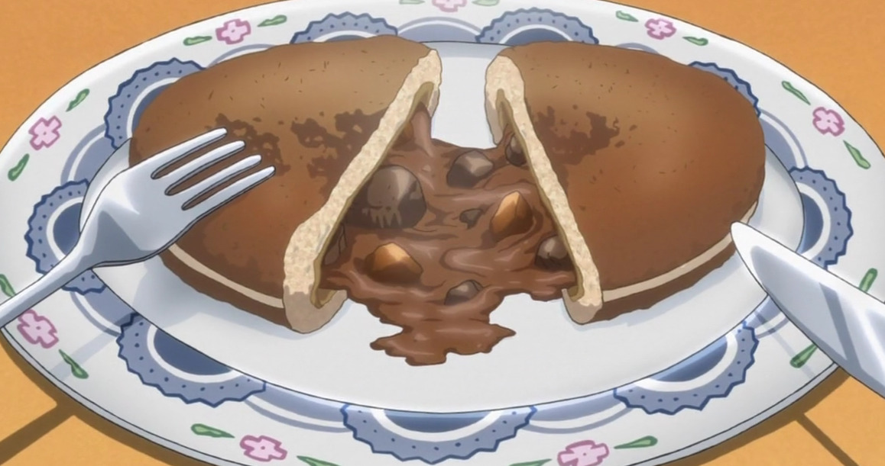
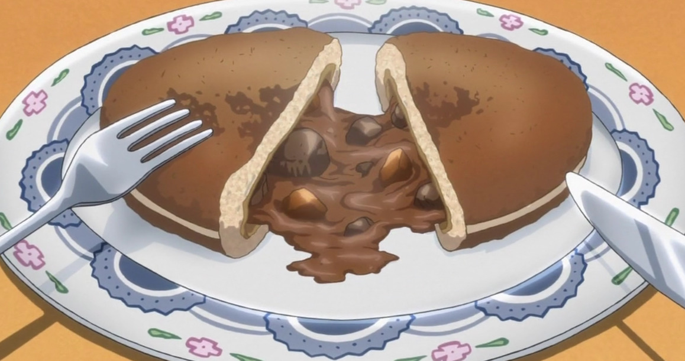

Chocolate Curry Buns
Home
As seen on the anime "Black Butler"
 

If you’re looking for a quicker, more authentically Japanese curry bun,
replace the curry roux and filling with a packet of instant curry and
follow the instructions on a package. This recipe is a “high class”, very
British way of looking at the curry bun, with attention paid to how
Sebastian cooked his in the show. Notice the atypical additions of black
pepper and red wine, frying the bun instead of baking, and, most
importantly, the chocolate. In short, his is simply one hell of a curry
bun recipe.
Ingredients:
Curry roux:
- 3 tbsp. butter
- 1/3 cup flour
- 2 tbsp. garam masala
- 1-2 tsp. freshly ground black pepper
- 1 tbs. tomato paste
- 1 tbs. Worcestershire sauce
Dough:
- 2 1/2 cups of all purpose flour
- 1 tsp. dry yeast
- 2 tsp. sugar
- 1 tsp. salt
- 1 tbsp. skim milk powder
- 1/2 cup water
- 1 egg
- 2 tbsp. butter
Filling:
- 2tbsp. oil
- 1 small onion, sliced thin
- 1 clove of garlic, minced
- 1/2 pound beef chuck roast, cubed, or stew meat
-
1/4 cup of red wine (substitute 1/8 cup balsamic vinegar and 1/8 cup
all-natural grape juice if you can't get wine)
- 1 carrot
- 1 medium pre-cooked yukon gold potato
- 1 tbsp. apple puree or apple sauce
- 1 cardamom pod
- 1 bay leaf
- 1/2 cup peas (optional)
- Half of a bar of dark chocolate
Instructions:
-
First, we’re going to start with the roux. Melt the butter over medium
low heat.
-
Add the garam masala and black pepper and stir to combine, then add the
tomato paste and Worcestershire sauce and combine. Continue to cook
until it becomes thick and paste-like. Remove from heat and set aside
until the meat and veggies are ready.
-
Add the garam masala and black pepper and stir to combine, then add the
tomato paste and Worcestershire sauce and combine. Continue to cook
until it becomes thick and paste-like. Remove from heat and set aside
until the meat and veggies are ready.
-
Combine yeast, water, and sugar in a bowl. Let it sit for 5-10 minutes,
until foamy.
- Add the rest of the dough ingredients and knead for 8-10 minutes.
-
Cover with a dish towel and allow dough to rise in a warm place until
doubled in size, about 1 to 1½ hours. If it’s cool in the kitchen, I
frequently turn on a stove top burner, and let the dough sit on the
counter near it to help the rising process.
-
Divide the dough into 8 equal portions. Let rest for 10 minutes (make
sure not to let them dry out, cover them with a damp paper towel or
two).
-
Heat 1 tablespoon of oil in your pan. Pat the beef down with a paper
towel to remove any excess moisture, sprinkle some salt and pepper on
the meat, and dust with a bit of flour. Once the pan is hot, add your
meat, cooking for about 6-7 minutes on each side, or until nice and
brown. Then, put the meat into a bowl and set aside.
-
Heat oil in a pan, and saute onion and garlic. While sauteing, grind the
cardamom and anise.
-
Add the browned beef, wine, water, carrots, potatoes, salt, apple puree,
cardamom, anise, and bay leaf, and then bring to a boil over high heat.
-
Turn the heat down to medium low and simmer partially covered until the
carrots are tender (about 45 minutes).
-
Add in the curry roux that you set aside in step 3 and the chocolate,
and stir until the roux and liquid in the pan combine and thicken into a
nice curry sauce. Set aside to cool, and don’t forget to remove the bay
leaf.
-
Dust your hands with flour! Flatten the dough balls into a round disc,
place a spoonful of filling in the middle, and wrap wrap the edges
around the filling. Gently shape each dough ball into a bun.
-
In a frying pan, heat about an inch of oil (vegetable, canola, or
sunflower oil are preferred). Add the buns, however many will fit in
your pan at a time. Fry them on medium/low until golden brown, turning
over to cook each side.
-
Let them cool, then present to the judges. Or your friends. Or just eat
them yourself.
 Next
Next